- Home
- Journey
A journey across stages
From Odisha to the world
From a book fair stage in Bhubaneswar in 2003 to the Taj Festival in Agra, the International Odissi Dance Festival and stages in the USA, Singapore and Malaysia: this is where Purnima’s Odissi has travelled.

The journey in numbers
“I performed in the State level, National level as well as International level festivals.”
Where the dance has travelled
Stages across India and the world
Every arc starts from Bhubaneswar, Odisha, where the first listed stage took place in 2003. Choose a map, then pick a place to find it.
The world map

United States
Southeast Asia
Where it began
The India map

Odisha
Across India
- India
- International
- Bhubaneswar, Odisha
- Journey from Bhubaneswar
Year by year
A timeline of festival stages
Every dated stage in Purnima’s brochure, from a book fair in Bhubaneswar in 2003 to Seattle, Houston and Palo Alto in 2016.
-
2003
The first listed stage
-
Itikili Mitikili, Book Fair
-
-
2004
To the national capital
-
Utkal Divas celebration
-
-
2005
South to Chennai
-
Utkal Divas celebration
-
International Women’s Day
-
-
2012
A state celebration
-
Balijatra Cuttack Utsav, Govt. of Odisha
-
-
2013
Odissi in the USA
-
International Odissi Dance Festival
-
Spiritual Retreat, “Path of Bliss”
-
Orissa Society of the Americas (OSA) Convention
-
ASHA for Education, Kirkland Performance Center
-
-
2014
Singapore & Malaysia
-
The Temple of Fine Arts
-
-
2015
A year of festivals
-
International Odissi Dance Festival
-
Taj Festival
-
Mukteswar Dance Festival
-
Shri Jagannath Mandir and Orissa Arts & Cultural Centre
-
Hari Das Samaroh
-
Kalakshatra Mumbai (ISKCON)
-
-
2016
Honoured in Odisha, on stage abroad
-
Milestone
Awarded ‘B’ Grade Artist, Doordarshan Kendra Bhubaneswar
-
The Temple of Fine Arts
-
ASHA for Education, Kirkland Performance Center
-
Ratha Yatra, Orissa Culture Center of Houston
-
Independence Day celebration
-
Across the years
Festival stages across India
Alongside the dated highlights, the brochure lists these stages: a beach festival and folk celebrations, an embassy, universities, television and cultural conventions.
In Odisha
-
Puri Beach Festival
Puri
-
Lokamahotsava
Angul, Dhenkanal & Sundargarh
-
Children’s Day programme
Women & Child Development Dept., Govt. of Odisha
Bhubaneswar
-
Raja Utsava
IMFA
Therubali
-
Kabi Samrat Upendra Bhanja Jayanti
NALCO
Damanjodi
-
17th Annual Finance Fiesta (FINCON)
Utkal University
Bhubaneswar
Across India
-
Sambaram
National Artists’ Grand Cultural Festival
Visakhapatnam, Andhra Pradesh
-
French Embassy
New Delhi
-
International Convention
Theosophical Society
Chennai, Tamil Nadu
-
150th Birth Anniversary of Gurudev Rabindranath Tagore
Central University of Jharkhand
2016
‘B’ Grade Artist
Doordarshan Kendra Bhubaneswar, Odisha
On screen
From the stage to the screen
Purnima’s Odissi has reached audiences beyond the festival ground, on Doordarshan and on national and regional television.
By the grace of Almighty I have been awarded ‘B’ grade artist of Doordarshan Kendra Bhubaneswar, Odisha in the year 2016.Purnima
- Doordarshan KendraBhubaneswar & New Delhi
- National TVNew Delhi
- E TVTelevision
- O TVTelevision
Your own journey begins here
Learn from a performer who has danced across the world
Classes for children and adults, taught in the lineage of Guru Shri Deba Prasad Das and Guru Shri Bharat Charan Giri. Tell us about the learner and we will suggest the right place to begin.